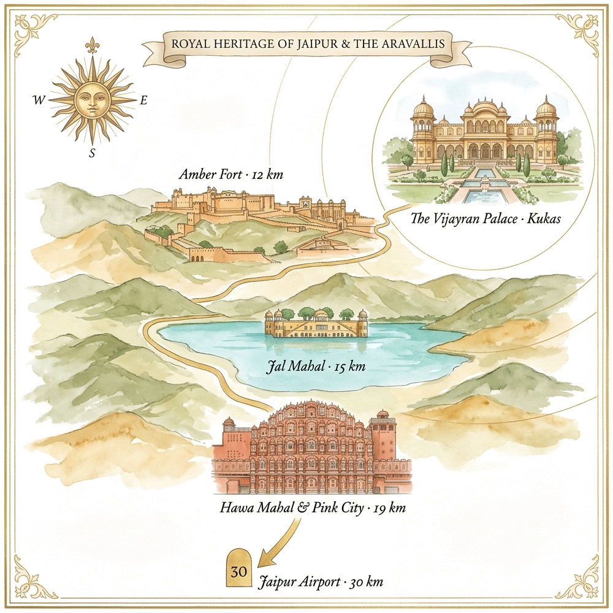
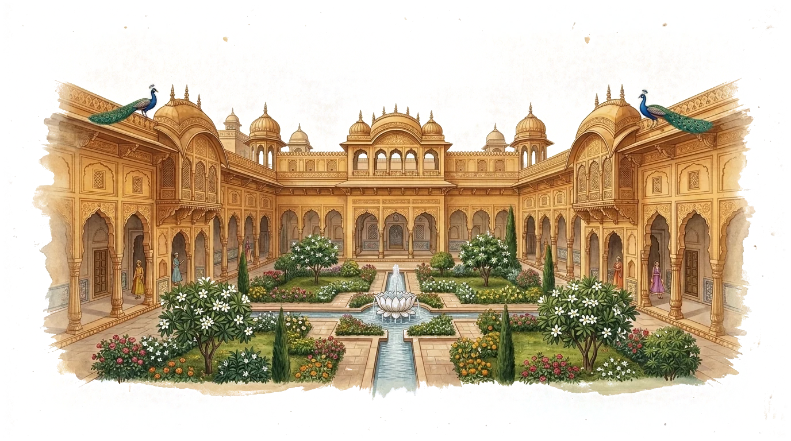
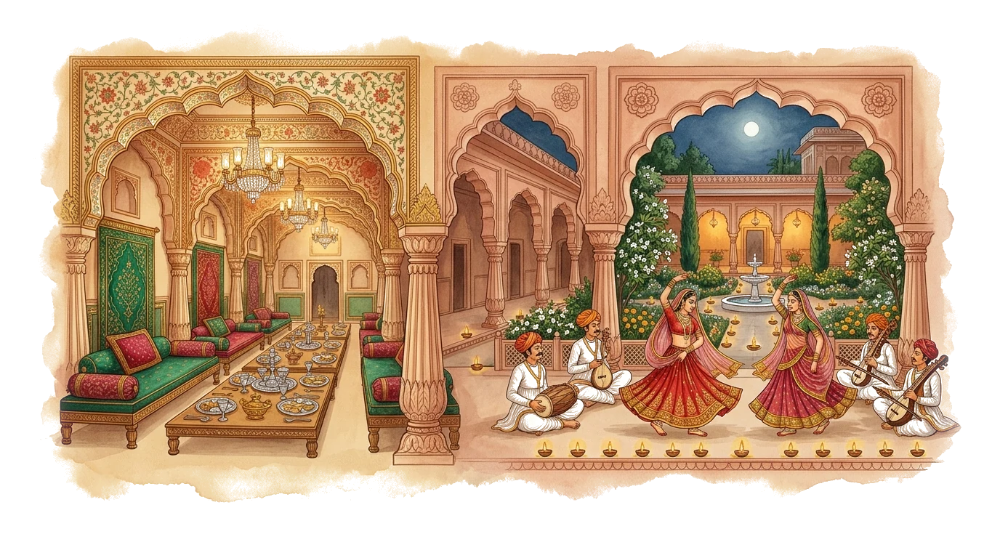
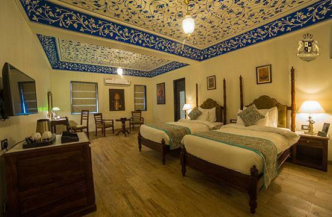

Shahi Chitramala · Royal Painted Scroll of Jaipur & Kukas
The Maharaja’s Stroll from the Pink City to Vijayran
In the royal courts of Rajasthan, when a Maharaja rode north from his capital to inspect his mountain pleasure-palace, court painters (chiteras) recorded every league, fort, lake, gateway and courtyard in mineral pigments and gold leaf upon handmade wasli parchment. Unroll this painted chronicle to follow the ancient royal route out of Jaipur—past every sentinel fort and water palace—and walk chamber by chamber through the complete living story of The Vijayran Palace at Kukas.
Khand I · The Royal Cavalcade Northward from Jaipur
From Hawa Mahal & Jal Mahal past Amber Fort to Kukas
Every fort, temple and royal cenotaph measured in leagues along the Aravalli pass


Setting forth at dawn beneath the rose-terracotta honeycomb of Hawa Mahal and the courtyards of City Palace, the royal procession winds northward between folded ochre hills. At Gaitore, carved marble cenotaphs honour the Kachhwaha kings; ahead, Jal Mahal floats motionless upon the turquoise waters of Man Sagar Lake while Nahargarh and Jaigarh guard the high mountain rim.
Climbing past the mighty ramparts and mirrored halls of Amber Fort—just twelve kilometres south of our gates—the highway gives way to quiet khejri groves and emerald crags until the sandstone domes of The Vijayran Palace, Kukas appear in serene mountain solitude.
Kos Minar · Hand-Painted Royal Milestones to The Vijayran Palace
Jaipur Airport · Sanganer
Southern aerial & highway gateway to the princely state of Jaipur
Birla Marble Mandir
Gleaming white marble shrine beneath Moti Dungri hill
Hawa Mahal & Pink City
Five-storey terracotta Crown of Winds & vibrant Johari bazaars
City Palace & Chandra Mahal
Royal court of the Kachhwaha Maharajas & Jantar Mantar
Gaitore Royal Cenotaphs
Hand-carved marble chhatris of Jaipur's kings in a quiet valley
Nahargarh & Jaigarh Forts
Twin mountain citadels standing watch along the folded ridge
Jal Mahal · Man Sagar Lake
The floating sandstone pleasure palace mirrored in turquoise waters
Historic Amber Fort (Amer)
Ancestral stronghold of Sheesh Mahal, Ganesh Pol & Maota Lake
The Vijayran Palace · Kukas
Cradled in the emerald Aravalli amphitheatre off the royal Amer pass
Leaving the ramparts of Amer twelve kilometres behind, the royal standards turn into the quiet valley of Kukas—where kettle-drums awaken above a towering yellow-sandstone gate.
Khand II · The Northern Threshold of Kukas
Gajdwar — The Portal of Elephants & Suryavanshi Forecourt
Where nagada kettle-drums thunder and the lotus channel reflects twin domes

Twelve kilometres north of Amber Fort, where the ancient Aravalli hills curve into a hushed green amphitheatre at Kukas, the Maharaja's road arrives beneath Gajdwar—the monumental yellow-sandstone Portal of Elephants. Up in the arched naqqarkhana gallery above the gate, musicians strike deep nagada kettle-drums and blow silver-rimmed trumpets while crimson rose petals rain down upon arriving carriages and caparisoned elephants.
Passing under the soaring cusped mehrab arch unveils the full Suryavanshi symmetry of The Vijayran Palace: twin octagonal corner towers crowned with ribbed chhatri cupolas, deep stone chhajja eaves engineered to tame the Rajasthan noon, and a tranquil Mughal water parterre blooming with pink lotuses between rows of slender cypress.
Step off the sunlit forecourt terrace and turn beneath a cool scalloped arch—where bright desert gold softens into lime-plastered shade and the gentle murmur of marble water.
Khand III · The Inner Haveli Aangans
Char Bagh Lotus Fountain, Haveli Chowk & Stone-Lace Jharokhas
Peacocks along the chhajja eaves and mountain breezes spun through carved jaali

Inside the palace walls, cool stone-flagged corridors open into sky-lit courtyards modeled on the royal havelis of Rajputana: Haveli Chowk and the four-quartered Char Bagh garden. At the crossing of four marble water rills, a hand-carved white lotus fountain murmurs day and night amid white frangipani blossoms, hosting intimate Mehendi and Haldi gatherings of 100 to 250 guests.
Raise your eyes to the upper storeys where peacocks rest along the warm sandstone parapets. Cantilevered jharokha balconies and pierced geometric jaali lattices overhang the square—filtering bright sun into lacework while cooling the expansive 1,345 sq ft Courtyard Haveli Suites, 800 sq ft Balcony Suites, 600 sq ft Jharokha Suites and 450 sq ft Haveli Rooms.
Follow the warm fragrance of roasted cloves, saffron and woodsmoke through brass-studded teakwood doors into the painted durbar chambers—and onward to the lantern-lit garden stage.
Khand IV · Royal Dastarkhwan & Living Arts
Swarn Mahal Feasts, Raj Mahal Durbar & Rang Mahal Nights
Heirloom recipes by candlelight and whirling Kalbeliya skirts to the bowed Ravanahatha

At the ceremonial heart of the scroll lie Raj Mahal—our grand tapestry banquet hall welcoming 250 to 300 guests beneath crystal chandeliers and hand-painted floral vaults—and Swarn Mahal, the palace dining salon. Here our Executive Chef revives guarded recipes of Mewar, Marwar and Awadh alongside global classics, harvesting crisp herbs and seasonal vegetables each dawn from the palace's own organic kitchen gardens.
Stepping eastward through cusped sandstone colonnades brings you to Rang Mahal, an open-air heritage amphitheatre for 400 to 500 guests. By day, hushed suites along this wing house the Rang Mahal Spa for restorative sixty-minute Ayurvedic therapies; at dusk, rows of brass diyas awaken as folk musicians play the ancient Ravanahatha and Ghoomar and Kalbeliya dancers spin beneath the moon.
One final winding path leads past bougainvillea-draped garden walls to secluded plunge-pool estates, turquoise sky-waters, spirited Marwari stables and the grand lamp-lit palace lawn.
Khand V · Waters of the Sky & Starlit Finale
Presidential Pool Enclaves, Ambar Taal, Marwari Trails & Mahal Bagh
Turquoise baradari reflections at dusk and a hundred golden lamps across the Aravallis

Along the quiet western sanctuary stand five walled Presidential Villas—private royal estates each enclosing its own manicured garden and shimmering plunge pool—beneath elevated Terrace Haveli Suites gazing straight across India's oldest mountain range. Just below, white marble baradari arches frame the turquoise stillness of Ambar Taal, where morning swims give way to artisanal high tea and rose-strewn candlelit dinners beside the water.
Where the gardens meet the foothills, noble sickle-eared Marwari horses, camels and safari jeeps set out along khejri-shaded trails alive with over 150 species of native birds. Finally, step onto the vast emerald carpet of Vijayran Mahal Bagh—capable of hosting 1,500 wedding guests under open skies—and look back as a hundred golden lamps set every dome, arch and jharokha of The Vijayran Palace aglow against the indigo Rajasthan night.
CONTINUE YOUR JOURNEY · 35 SUITES & VILLAS
Step Inside Our Residences
Thirty-five private-pool villas, terrace suites and haveli rooms await along the palace courtyards you have just walked.
Presidential Villas
Private pool & garden · 5 villas

Terrace Haveli Suites
Sunset terraces & outdoor dining · 5 suites

Courtyard Haveli Suites
Private garden courtyards · 11 suites · 1,345 sq ft

Balcony Haveli Suites
Aangan-style courtyards & sunrise views · 6 suites · 800 sq ft

Jharoka Haveli Suites
Hand-carved jharokas · 4 suites · 600 sq ft

Haveli Rooms
King-size or twin beds, thoughtfully priced · 4 rooms · 450 sq ft